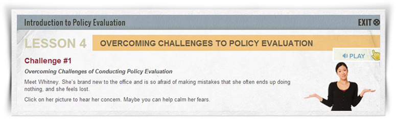

Audio Features
This course respects your reading ability, as well as your need to control the pace of your learning, so you won’t hear anyone reading the screens to you. However, the course uses audio occasionally—for example, to present real-world examples and advice from policy evaluation experts. To hear these valuable insights, keep an eye out for the selectable icon labeled “Lessons from the Field.”
When a page contains audio, you will see an audio icon at the top right of the screen. The prompt at the bottom of the page will tell you what to click on to begin the audio. While the audio is playing, you can pause it by selecting “Pause,” next to the audio icon, and restart it by selecting “Play,” as shown in the screenshot below. You can also read a transcript by clicking on the “Transcript” link.
